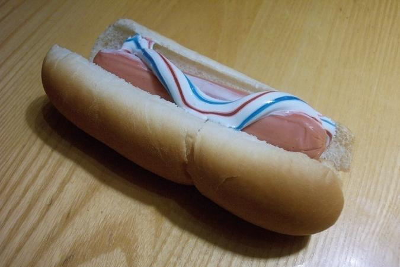

Have you ever wanted to skip brushing your teeth after a bomb ass meal? You are not alone. Millions of people all around the world have personally messaged me with emails detailing how just saving those extra 5 minutes a day would greatly improve their life. So I got to thinking about what takes a short time to make, but could also help with the problem so many of us face. This is what dedicating 100% of my brain power has resulted in. I introduce to you the ultimate food/hygiene combo.
Make sure to post on Instagram and tag all your friends to make them jealous of your new culinary skills